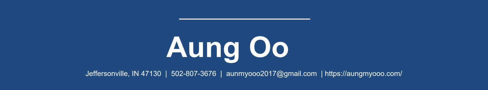

Summary

Aung Oo is an animator with a strong background in photography and videography. He applies storytelling skills to create dynamic
animations, drawing inspiration from Hollywood and online games. With a focus on contributing to the film or game industry, he is
dedicated to experimenting with styles, learning new techniques, and developing captivating content that resonates globally.
Skills
- Hand Sketching
- 3D Modeling
- Rigging
- Animation
- Storytelling
- Expert in Maya Software
- Adobe Creative Suite
- Creative and Critical Thinking
Projects
-
3D Animation: Caveman
Created a 3D animation of a caveman exploring an area with deserted temples, using Maya. This project showcases my
abilities in sketching, 3D modeling, rigging, animation, and visual storytelling.
-
3D Animation: T-Rex
Developed a 3D animation of a T-Rex navigating a terrain, using Maya. This project demonstrates my skills in drawing, creating
3D models, rigging, animating, and narrative crafting.
Experience
-
Photographer | 04/2021 - 07/2023
Quilted Media - New Albany, IN
-
Worked closely with project managers, photographers, art directors, stylists, and post-production team.
-
Enhanced, retouched, and resized photographs and negatives using airbrushing and other techniques.
-
Videographer | 02/2020 - 04/2021
Save Myanmar Campaign of Kentucky - Louisville, KY
-
Collaborated with colleagues to develop innovative ways to tell stories visually.
-
Edited videos and film compilations before publication.
Education
Purdue University - New Albany, IN | Bachelor of Science
Computer Graphic Technology, Expected in 07/2026
Ivy Tech Community College of Indiana - Sellersburg, IN | Associate of Applied Science
Visual Communication, 07/2021
My Hobbies
My Contact